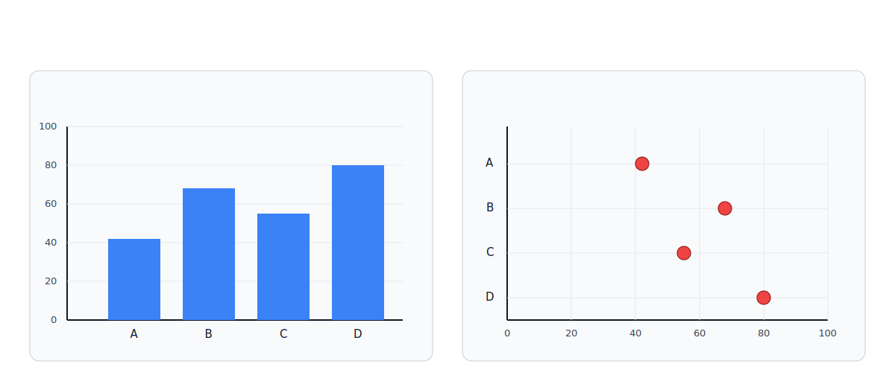
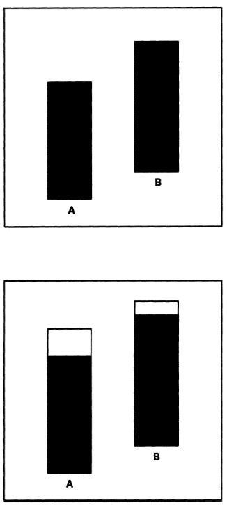
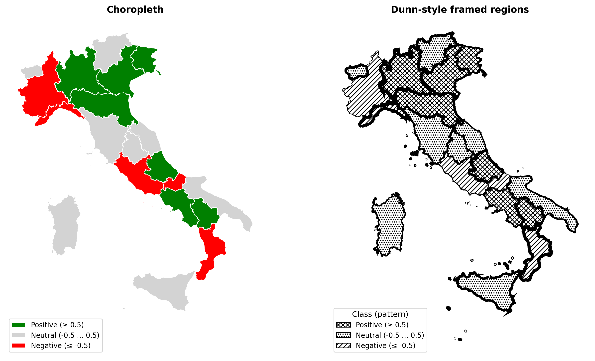
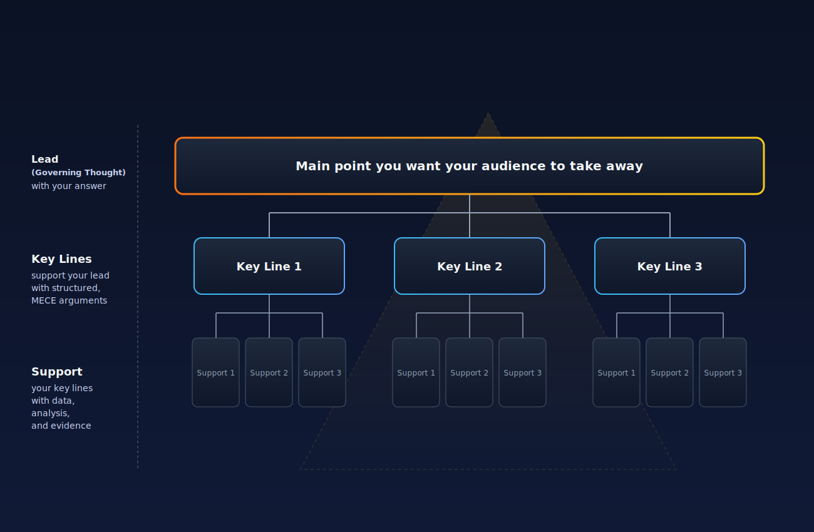

Data Storytelling
In questo articolo ho voluto approfondire alcuni principi che stanno alla base della data visualization e del modo di comunicare i dati.
Introduzione
Nell'attuale panorama aziendale, caratterizzato da un'ipertrofia di dati (si parla di Big Data da anni ormai), le organizzazioni si trovano a fronteggiare un problema:
L'aumento esponenziale della disponibilità di informazioni non si traduce linearmente in una migliore qualità decisionale.
Al contrario però, spesso questo genera una paralisi analitica. Questo fenomeno non è imputabile all'assenza di tecnologie di estrazione o elaborazione dei dati, ambiti in cui Data Engineering e Data Science hanno fatto passi da gigante negli ultimi anni, ma risiede di più nella comunicazione e il reporting.
Il Data Storytelling, lungi dall'essere un mero esercizio estetico o una "soft skill" accessoria per abbellire presentazioni, rappresenta oggi un problema operativo importante tanto quanto la capacità di fare delle analisi solide. È, a tutti gli effetti, una disciplina di "ingegneria della decisione". Non hai idea del numero di volte che ho visto un progetto potenzialmente bellissimo raccontato male.
Quando il trasferimento di insight analitici dai team tecnici ai decisori strategici (C-Level, VP, Directors) fallisce, a pagarne le spese di solito è l'organizzazione in modo devastante. Gartner stima che la scarsa qualità dei dati costi alle organizzazioni medie circa 12,9 milioni di dollari all'anno in risorse sprecate e opportunità mancate. Questo concetto va dall'inzio (a come vengono raccolti e sistemati i dati) fino ad arrivare alla loro inefficace comunicazione e interpretazione. Se allarghiamo lo sguardo all'economia statunitense nel suo complesso, studi riportati dalla Harvard Business Review indicano che la miscomunicazione e i dati errati drenano fino a 3 trilioni di dollari annualmente.
Il report, la dashboard o il memo esecutivo non sono artefatti fini a se stessi ma costituiscono una sorta di UI (User interface) del processo decisionale.
Un'interfaccia scadente, che impone magari un carico mentale eccessivo o che nasconde le relazioni causali dietro alcune aggregazioni, rende nullo il ROI.
In un percorso di adozione pragmatica dell'Intelligenza Artificiale, la capacità di narrare il dato con rigore diventa ancora più cruciale: l'AI agisce come acceleratore di produzione di contenuti e analisi, ma senza un framework di controllo e comunicazione rigoroso, rischia di accelerare anche la diffusione di "allucinazioni statistiche e bias decisionali".
In questo articolo voglio provare a smantellare i miti del "Data Storytelling" come arte creativa, ridefinendolo attraverso protocolli derivati dalla psicologia cognitiva, dalla teoria della percezione grafica e dalle metodologie di management più rigorose (come il modello narrativo di Amazon o il principio della Piramide di McKinsey). L'obiettivo è fornire un articolo operativo per trasformare la fase di scrittura di report in modo efficace. Per farlo cercherò di usare un tono più formale del solito (per quanto possibile XD).
Teoria: Scienza della percezione
Il primo step per cambiare mindset è abbandonare l'intuizione soggettiva ("questo grafico mi piace") a favore di evidenze scientifiche su come il cervello umano processa le informazioni visive e testuali.
La teoria del carico cognitivo (Cognitive Load Theory)
La Cognitive Load Theory (CLT), sviluppata dallo psicologo John Sweller alla fine degli anni '80, fornisce la base teorica per comprendere perché la maggior parte delle dashboard aziendali fallisce.
La teoria postula che la memoria di lavoro umana abbia una capacità estremamente limitata di elaborare nuove informazioni simultaneamente. Quando un executive si trova di fronte a un report, il suo cervello deve gestire tre tipi di carico cognitivo, e l'obiettivo di chi disegna report deve essere l'ottimizzazione di questo bilanciamento. Con report intendo sia classici report che presentazioni, dashboard ecc.
Il primo tipo è il Carico cognitivo intrinseco (Intrinsic Load). Questo è determinato dalla complessità inerente dell'informazione stessa. Ad esempio, osservare una formula con integrali o leggi matematiche che governano il mercato richiedono uno sforzo mentale ineliminabile, legato alla difficoltà del concetto. Questo carico è necessario e non può essere eliminato senza banalizzare il contenuto.
Il secondo, e più insidioso, è il Carico cognitivo estraneo (Extraneous Load). Questo carico è generato dal modo in cui l'informazione è presentata. Ogni elemento visivo che non contribuisce direttamente alla comprensione del dato. Alcuni esempi sono griglie pesanti, effetti 3D, legende separate dal grafico, colori non codificati semanticamente, testo ridondante. Tutto questo costringe il cervello a sprecare risorse preziose per decodificare l'interfaccia piuttosto che il messaggio. Quello che ho notato dalla mia (breve) esperienza e ascoltando le persone a cui ho fatto consulenza, nel reporting aziendale, il carico estraneo è il nemico numero uno! Infatti questo potenzialmente può trasformare l'analisi in rumore. Una dashboard mal progettata, che costringe l'occhio a fare "ping-pong" tra una legenda e le barre di un grafico, aumenta il carico estraneo al punto da saturare la memoria di lavoro, impedendo l'apprendimento o la decisione. A tal riguardo vi lascio il link ad un articolo su Medium.
Infine, vi è il Carico cognitivo Germano (Germane Load). Questo si riferisce allo sforzo necessario per trasferire le informazioni a breve termine alla conoscenza e alla comprensione a lungo termine tramite schemi.
"A differenza del carico cognitivo intrinseco ed estraneo, il carico cognitivo germanico non costituisce una fonte indipendente di carico cognitivo. Si riferisce semplicemente alle risorse di memoria di lavoro disponibili per affrontare l'interattività degli elementi associati al carico cognitivo intrinseco". (Sweller, p. 126)
Come tale, il carico cognitivo germanico coinvolgerebbe le attività di apprendimento e i processi mentali che tentano di collegare le informazioni agli schemi di conoscenza a lungo termine in modo costruttivo, usando strumenti come l'utilizzo di dispositivi mnemonici, l'attivazione di conoscenze precedenti, ecc.
Sostanzialmente è il "carico buono", quello che porta all'insight e all'azione.
L'obiettivo del Data Storytelling è minimizzare il carico estraneo per liberare risorse cognitive da dedicare al carico germano, permettendo al decisore di assimilare meglio i dati e comprendere non solo cosa sta succedendo, ma perché e come intervenire.
| Tipo di Carico Cognitivo | Definizione Operativa nel Reporting | Esempio di Errore (Bad Practice) | Obiettivo di Design |
|---|---|---|---|
| Intrinseco | Complessità inerente ai dati e al problema (es. calcolo EBITDA). | Semplificare eccessivamente omettendo variabili causali necessarie. | Gestire attraverso segmentazione logica (Pyramid Principle). |
| Estraneo | Sforzo inutile causato da design povero o "chartjunk". | Grafici 3D, doppi assi $Y$, legende dislocate, decorazioni inutili. | Minimizzare drasticamente (Data-Ink Ratio). |
| Germano | Sforzo produttivo per creare modelli mentali e decisioni. | Manca la sintesi o la raccomandazione ("So What?"). | Massimizzare fornendo contesto e narrazione chiara. |
Gerarchia della percezione grafica
Se la CLT ci dice quanto il cervello può processare, gli studi di William Cleveland e Robert McGill (1984) ci dicono come il cervello decodifica le informazioni visive con maggiore o minore accuratezza. La loro ricerca ha stabilito una gerarchia fondamentale dei compiti percettivi, ordinati dal più accurato al meno accurato.
Al vertice della gerarchia troviamo la posizione su una scala comune. Il cervello umano è straordinariamente abile nel confrontare la posizione di punti o barre allineati su un singolo asse (come in un bar chart o un dot plot). Questo compito percettivo permette di distinguere differenze minime con grande accuratezza. Nel loro articolo sostengono che un compito percettivo è considerato più accurato se porta a giudizi umani più vicini alle quantità reali codificate. Gli esperimenti condotti confermano che i giudizi basati sulla posizione sono significativamente più accurati rispetto a quelli basati sulla lunghezza o sull'angolo.

Barplot (sinistra) e dotplot (destra): due rappresentazioni diverse dello stesso compito percettivo, la posizione su una scala comune.
Segue, con un leggero degrado dell'accuratezza, la Posizione su scale non allineate (Positions along nonaligned scales). Questo compito si verifica quando si confrontano valori rappresentati su scale identiche ma spazialmente separate, ad esempio nei small multiples o in pannelli grafici affiancati (juxtaposed graphs), dove ogni pannello mantiene la propria scala.
Il motivo per cui questa codifica resta più affidabile della semplice lunghezza è che la presenza della scala, anche se non condivisa fisicamente sullo stesso asse, offre all'occhio ulteriori visual cues di riferimento. In pratica, non stiamo stimando soltanto “quanto è lunga una barra”, ma “dove cade un valore” rispetto a un contesto visivo strutturato.
Un esempio classico è quello dei rettangoli incorniciati: se confronti due barre isolate, il compito percettivo è la stima della lunghezza (meno precisa); se invece inserisci le stesse barre in una cornice di riferimento, il giudizio si sposta sulla posizione dell'estremità della barra rispetto al bordo superiore della cornice, quindi su una scala non allineata.
Qui entra in gioco anche la Legge di Weber: la cornice crea una porzione “vuota” sopra la parte piena. Quando due barre sono simili, la differenza relativa tra le porzioni vuote può risultare più ampia e quindi più facile da cogliere rispetto alla differenza tra le porzioni piene. In sintesi, anche senza un asse condiviso, un riferimento visivo coerente migliora in modo netto la precisione del confronto.
 Confronto tra barre semplici (in alto) e barre incorniciate (in basso): la cornice introduce un riferimento che rafforza il giudizio percettivo.
Scendendo nella gerarchia, troviamo la Lunghezza, la Direzione e l'Angolo. La lunghezza occupa il terzo livello (a pari merito con direzione e angolo), subito dopo la posizione su scale non allineate. Sembra un compito naturale, ma i risultati sperimentali di Cleveland e McGill mostrano chiaramente che è meno affidabile della posizione.
Le evidenze quantitative sono nette:
- gli errori medi nei giudizi di lunghezza risultano circa dal 40% al 250% più alti rispetto ai giudizi di posizione;
- il 78% dei grandi errori osservati negli esperimenti ricade nei compiti basati sulla lunghezza;
Nonostante questo, la lunghezza resta comunque preferibile ad area e volume. In termini psicofisici (Legge di Stevens, $p = k a^{\beta}$), la lunghezza ha un esponente $\beta$ vicino a 1: la percezione è quindi quasi lineare e molto meno distorta rispetto a codifiche areali o volumetriche, dove la sottostima è più marcata.
Dal punto di vista del design, i casi più problematici sono:
- Divided bar charts (barre impilate): solo il segmento alla base beneficia di una scala comune; i segmenti superiori richiedono confronti di lunghezza e diventano rapidamente difficili da confrontare tra categorie diverse.
- Curve-difference charts: quando due serie sono rappresentate come linee, il lettore dovrebbe stimare la distanza verticale tra curve (lunghezza), ma l'occhio tende a inseguire la distanza minima locale tra i tracciati, introducendo errori anche grossolani; in pratica, è un compito percettivo quasi impossibile da svolgere con precisione.
Questo spiega perché, come visto con i rettangoli incorniciati, la posizione su scale non allineate rende meglio che la lunghezza: quando introduci un riferimento visivo stabile, il confronto percettivo diventa più robusto. Operativamente, quando possibile conviene sostituire codifiche basate sulla lunghezza (es. molte barre impilate) con grafici che privilegiano la posizione, come i dot chart.
Per angolo e direzione il quadro è più sottile: non sono compiti equivalenti, anche se condividono lo stesso livello della gerarchia.
Angolo (e problema dei pie chart).
I grafici a torta richiedono soprattutto giudizi angolari, ed è qui che emergono i limiti maggiori. Nel Position-Angle experiment, i giudizi basati sulla posizione risultano quasi due volte più accurati (fattore ~1,96) rispetto a quelli basati sull'angolo; inoltre, l'88% dei grandi errori osservati proviene proprio dai compiti angolari. Qui compare un bias sistematico di sottostima, soprattutto nella fascia 25%-50%. La conseguenza operativa che quando l'obiettivo è il confronto quantitativo, conviene sostituire il pie chart con bar chart o, meglio ancora, dot chart.Direzione (slope/pendenza).
Nei grafici cartesiani, la direzione è invece utile per riconoscere rapidamente pattern (linearità, non linearità, cambi di regime). Se gli stessi dati vengono ripresentati eliminando l'indizio di pendenza, la lettura della struttura complessiva diventa molto più faticosa. Detto questo, stimare con precisione un valore di pendenza resta meno accurato che leggere una posizione su scala. Per questo, quando serve accuratezza numerica, è spesso utile trasformare il problema in un compito di posizione (ad esempio calcolando le pendenze e riportandole come punti su una scala, come suggerito da Tukey in alcuni contesti diagnostici).
In sintesi: l'angolo è un compito debole da evitare per confronti precisi (quindi pie chart da limitare), mentre la direzione è molto efficace per cogliere trend e forma globale dei dati. Quando però si passa dalla lettura qualitativa alla stima quantitativa, il criterio migliore resta sempre lo stesso: riportare il confronto su una posizione su scala comune.
Al fondo della gerarchia troviamo l'Area e il Volume per codificare grandezze quantitative. Qui la differenza rispetto alla lunghezza è spiegata bene dalla legge psicofisica di Stevens $$p = k a^{\beta},$$ che lega intensità percepita e intensità reale:
- Lunghezza: $\beta \approx 1$, quindi la percezione è quasi lineare (raddoppio fisico ≈ raddoppio percepito).
- Area: $\beta < 1$, tipicamente intorno a 0,7, quindi tendiamo a sottostimare; per far apparire una forma come “doppia”, l'area reale deve crescere più del doppio.
- Volume: $0.5 \leq \beta \leq 0.7$, con sottostima ancora più forte; il giudizio di volumi 3D su supporti 2D è particolarmente debole.
Ergo, i grafici che codificano quantità tramite area o volume (bubble chart, pie chart, barre 3D) rendono i confronti meno precisi. Se un pie chart è già inferiore a un dot chart perché richiede giudizi su angolo/area, una codifica volumetrica peggiora ulteriormente l'errore percettivo.
Nella gerarchia dei compiti percettivi per dati quantitativi, la saturazione del colore (insieme all'ombreggiatura) è all'ultimo livello: è il metodo meno accurato per comunicare numeri, inferiore a posizione, lunghezza, area e volume.
La tinta (hue: rosso, blu, verde, ecc.) è deliberatamente esclusa dalla codifica quantitativa perché non esiste un ordinamento univoco e non ambiguo "dal più piccolo al più grande". Per questo motivo, la tinta è adatta unicamente a variabili categoriche, non a variabili reali continue.
Applicazione pratica nelle mappe: le mappe statistiche a zone (choropleth) colorano regioni geografiche in base a un valore e quindi costringono il lettore a un compito percettivo a bassa accuratezza. Quando l'obiettivo è confrontare quantità in modo preciso, è preferibile sostituirle con rappresentazioni che riportano il confronto sulla posizione (ad esempio i framed-rectangle charts), invece di affidarlo alla saturazione del colore.
 A sinistra: la mappa choropleth richiede confronti basati su saturazione. A destra: il framed-rectangle chart mantiene il riferimento geografico ma sposta il confronto sulla posizione del bordo superiore delle barre.
Attention is all WE need
Per guidare l'attenzione del decisore senza esaurire il suo carico cognitivo, il designer deve sfruttare i cosiddetti attributi pre-attentivi.
Si tratta di caratteristiche visive (colore, dimensione, orientamento, movimento) che il cervello processa in meno di 200 millisecondi, prima ancora che intervenga l'attenzione conscia. L'uso strategico del colore, ad esempio, non serve a "rendere bello" il grafico, ma a segnalare l'eccezione. In una dashboard di performance di vendita, usare un colore grigio neutro per tutti i dati in linea con il budget e un rosso acceso solo per i mercati sotto-performanti sfrutta la pre-attenzione per dire a chi deve leggere quel grafico: "Guarda qui". Questo riduce il tempo di ricerca visiva e abbatte il carico estraneo.
Questo concetto si sposa perfettamente con il principio del Data-Ink Ratio di Edward Tufte. Tufte definisce questo rapporto come la proporzione di inchiostro (o pixel) utilizzata per rappresentare i dati reali rispetto all'inchiostro totale del grafico.
$$\text{Data-Ink Ratio} = \frac{\text{Inchiostro dei Dati}}{\text{Inchiostro Totale}}$$
L'imperativo operativo è cancellare tutto ciò che non è relativo al dato (non-data-ink), ovvero che non aggiunge informazioni sui dati o che è ridondante. Griglie pesanti, sfondi colorati, bordi di contorno, effetti 3D: tutto questo è "chartjunk" che deve essere rimosso per massimizzare il segnale rispetto al rumore. Un grafico con un alto Data-Ink Ratio è spoglio, essenziale e focalizza l'intera potenza cognitiva del lettore sui numeri e sui trend.
Esempi pratici di applicazione del principio sono:
- Grafici a Barre (Bar Charts)
- Scenario: un analista deve mostrare le vendite totali per regione, evidenziando che Molise sta sottoperformando.
- Problemi iniziali: griglie troppo evidenti che distraggono; colori diversi per ogni regione senza motivo; legenda ridondante; etichette degli assi ("Sales", "Region") inutili dato che il titolo spiega già il contenuto.
- Ottimizzazione proposta:
- Rimozione: vengono eliminate le griglie e l'asse verticale, scrivendo i valori direttamente sopra le colonne. Vengono rimosse anche le etichette degli assi e la legenda.
- Colore: invece di colorare ogni barra diversamente, si usa il colore solo per la regione Sud (quella di interesse), lasciando le altre neutre. Questo attira immediatamente l'attenzione sul messaggio chiave: "il Sud sta andando male".
- Grafici a Linee (Line Charts)
- Scenario: report sui profitti di alcune categorie di prodotti, mostrando piccole perdite in alcuni mesi.
- Problemi iniziali: etichette ridondanti ("Profitto", "Mese") che sono ovvie dal contesto, aree colorate sotto la linea dello zero che occupano troppo spazio visivo ("overkill") e l'uso di una legenda separata.
- Ottimizzazione proposta:
- Semplificazione: l'area colorata viene sostituita da una linea semplice che distingue i valori positivi da quelli negativi.
- Etichettatura diretta: la legenda viene rimossa e i nomi delle categorie vengono posizionati direttamente accanto alle linee corrispondenti. Questo permette di risparmiare spazio e rendere la lettura più immediata.
- Grafici a Torta (Pie Charts)
- Scenario: mostrare che la categoria Office Supplies costituisce la maggioranza degli ordini.
- Problemi iniziali: visualizzazione delle percentuali esatte (non necessarie se la proporzione è schiacciante ed evidente); uso della legenda.
- Ottimizzazione proposta:
- Trasformazione in Doughnut Chart: si suggerisce di passare da un grafico a torta a un grafico a ciambella. Questo riduce l'inchiostro totale usato e libera spazio al centro.
- Titolo integrato: lo spazio vuoto al centro della "ciambella" viene utilizzato per inserire il titolo o l'etichetta principale, risparmiando ulteriore spazio.
In tutti gli esempi, l'obiettivo è rimuovere il non-data-ink (griglie, effetti 3D, colori inutili) e il redundant data-ink (legende doppie, etichette ovvie) per far emergere chiaramente il dato. Tuttavia, non bisogna esagerare, e bisogna assicursi che il grafico rimanga comprensibile per il pubblico di destinazione.
Come strutturare i report in ambito business
Avere grafici scientificamente corretti non è sufficiente se manca una struttura logica che li connetta. La narrazione nel contesto enterprise non deve essere un'Odissea, ma una argomentazione logica deduttiva o induttiva strutturata per l'efficienza decisionale.
The Pyramid Principle (Minto) e la comunicazione Top-Down
Il framework di riferimento per la comunicazione esecutiva è il Pyramid Principle, codificato da Barbara Minto in McKinsey. La struttura accademica tradizionale (Introduzione → Metodologia → Analisi → Conclusioni) tende a essere fallimentare nel business perché costringe il lettore ad attendere la fine per capire il punto. Gli executive, operando in regime di scarsità di tempo, necessitano di una struttura rovesciata.
La piramide impone di iniziare con il Lead (Governing Thought), cioè il Pensiero Guida o la Risposta Principale. Questa è la singola idea, raccomandazione o conclusione che il report vuole veicolare. Sotto il vertice, si trovano le Key Lines: 3 o 4 argomenti principali che supportano logica e fattualmente il pensiero guida. Al livello base, si trova il Support: i dati, i grafici, le tabelle e le analisi di dettaglio che provano la validità delle Key Lines.20
Questa struttura abilita una lettura efficiente: il decisore comprende immediatamente la tesi. Se si fida, può fermarsi o saltare alle azioni. Se è scettico, può scendere di un livello nella piramide per verificare l'argomentazione (drill-down). È un approccio "MECE" (Mutually Exclusive, Collectively Exhaustive): gli argomenti devono essere distinti tra loro e coprire interamente lo spazio del problema.22
 *Schema del Pyramid Principle: dal vertice con il Lead (Governing Thought), ai livelli di Key Lines e Support.*
2.2 Il Framework SCQA: Contestualizzare l'Insight
Ogni report efficace deve rispondere a una domanda che esiste, o dovrebbe esistere, nella mente del destinatario. Il modello SCQA (Situation, Complication, Question, Answer) è lo standard per definire l'introduzione di un report o di una sezione.22
- Situation (Situazione): Descrive lo stato delle cose noto e non controverso. Serve ad allineare tutti i lettori sul contesto di partenza (es. "Nel Q3, il fatturato dell'area EMEA è stato di 50M€, in linea con lo storico").
- Complication (Complicazione): Introduce l'elemento di novità, il problema o l'opportunità che altera la situazione e crea tensione (es. "Tuttavia, il margine di contribuzione è sceso del 15% a causa dell'aumento dei costi logistici non previsti").
- Question (Domanda): L'interrogativo implicito che sorge dalla complicazione (es. "Come possiamo recuperare la marginalità nel Q4 senza compromettere i volumi?").
- Answer (Risposta): La tesi del report, che coincide con la Governing Thought della Piramide (es. "Raccomandiamo una revisione immediata delle tariffe di spedizione per gli ordini sotto i 50€ e lo spostamento del mix di vendita verso il prodotto Premium").
Questa sequenza trasforma un insieme di dati freddi in una storia di business rilevante, agganciando l'attenzione del lettore e giustificando l'esistenza stessa del report.
2.3 Amazon 6-Pager: La Morte delle Slide
Nel mondo tecnologico avanzato, le slide (PowerPoint) sono spesso viste come un veicolo di comunicazione "a bassa risoluzione". Jeff Bezos ha notoriamente bandito PowerPoint dalle riunioni esecutive di Amazon a favore dei "Narrative Memos" di 6 pagine.23 La ragione è cognitiva: le liste puntate (bullet points) tipiche delle slide permettono di nascondere la debolezza del pensiero. È facile scrivere "• Aumento costi" e "• Nuovo fornitore" uno sotto l'altro, lasciando ambigua la relazione causale. Scrivere frasi complete, con soggetto, verbo e predicato, costringe l'autore a esplicitare il nesso: "L'aumento dei costi è stato causato dall'onboarding del nuovo fornitore". Se la logica è fallace, la scrittura narrativa la espone impietosamente.25
Struttura Operativa del Memo (Template Amazon adattato):
- Introduction: Contesto e scopo del documento (usando SCQA).
- Goals: Obiettivi SMART e metriche di successo definite a priori.
- Tenets: Principi guida e assunzioni non negoziabili che orientano le decisioni.
- State of the Business: Analisi rigorosa dei dati attuali. Qui si usano i grafici (integrati nel testo, non allegati) per stabilire la baseline.
- Lessons Learned: Analisi retrospettiva di cosa ha funzionato e cosa no, basata sui dati.
- Strategic Priorities: Il piano d'azione proposto per il futuro.
- Appendix: Tabelle dati grezzi, grafici supplementari e dettagli tecnici (non conta nel limite delle pagine).
Le riunioni in Amazon iniziano con 20-30 minuti di "sala studio" in silenzio, dove tutti leggono il memo. Solo dopo inizia la discussione. Questo livella il campo di gioco, assicura che tutti abbiano consumato i dati e alza drammaticamente la qualità del dibattito, spostandolo dalla comprensione dei fatti all'interpretazione e decisione.24
2.4 Executive Summary: Anatomia della Sintesi
L'Executive Summary è spesso la parte più letta e peggio scritta. Non deve essere un "teaser" ("in questo report vedremo..."), ma uno spoiler completo. Deve poter sostituire l'intero documento.
Una struttura efficace per l'Executive Summary di un report di Data Science deve contenere quattro elementi chiave:
- Claim (Tesi): La conclusione principale.
- Evidence (Prova): Il dato statistico più forte che supporta la tesi (non tutti i dati, solo il "killer stat").
- Caveat (Rischi/Limiti): Onestà intellettuale sui limiti dell'analisi (es. "Dati limitati al mercato US", "Confidenza del modello al 85%"). Questo aumenta la credibilità dell'autore.
- Next Steps (Azione): Cosa si richiede al decisore (approvazione, budget, presa d'atto).28
3. Patologie dei Dati: Errori Comuni e Paradossi Statistici
L'applicazione del Data Storytelling funge da meccanismo di controllo qualità (Quality Assurance). Tentando di costruire una narrazione causale, spesso emergono errori interpretativi che in una semplice tabella passerebbero inosservati.
3.1 Il Paradosso di Simpson: Quando l'Aggregazione Mente
Uno degli errori più pericolosi nel reporting aggregato è il Paradosso di Simpson. Si verifica quando un trend appare in diversi gruppi di dati ma scompare o si inverte quando questi gruppi vengono combinati.30 Questo paradosso è frequente nel marketing e nelle vendite e può portare a decisioni opposte alla realtà.
Esempio Concreto: Performance Campagne Marketing
Immaginiamo di dover decidere quale tra due campagne (A e B) mantenere attiva, basandoci sul Conversion Rate (CR).
| Campagna | Visite Totali | Conversioni Totali | Conversion Rate (CR) | Decisione Apparente |
|---|---|---|---|---|
| Campagna A | 2500 | 460 | 18,4% | VINCITORE |
| Campagna B | 3300 | 450 | 13,6% | PERDENTE |
Guardando il dato aggregato, la Campagna A sembra nettamente superiore (18,4% vs 13,6%). Un manager deciderebbe di tagliare la B.
Tuttavia, disaggregando i dati per segmento di cliente (High Value vs Low Value), emerge una realtà diversa:
| Segmento | Campagna A (CR) | Campagna B (CR) | Vincitore Reale |
|---|---|---|---|
| High Value (Alta propensione) | 58,0% (290/500) | 60,0% (180/300) | Campagna B |
| Low Value (Bassa propensione) | 8,5% (170/2000) | 9,0% (270/3000) | Campagna B |
La Campagna B è superiore in entrambi i segmenti presi singolarmente! Perché il totale dice il contrario? Perché la Campagna A ha avuto la "fortuna" di avere una percentuale maggiore di traffico dal segmento High Value (che converte naturalmente molto di più), mentre la Campagna B è stata penalizzata ricevendo la gran parte del traffico dal segmento Low Value. Questo è un problema di "Mix Effects".31 Senza questa disaggregazione narrativa, il report avrebbe portato a cancellare la campagna tecnicamente più performante (la B). Il Data Storytelling rigoroso impone di chiedersi sempre: "C'è una variabile latente (confounder) che sta distorcendo la media?".33
3.2 Il "Churn" Male Interpretato e il Selection Bias
Un altro classico errore operativo riguarda la metrica del Churn. Riportare un "Churn Rate" unico (es. 5%) è spesso fuorviante in ambito B2B Enterprise. Se l'azienda perde 10 piccoli clienti che pagano 1k€ l'anno, ma mantiene l'unico cliente che ne paga 100k€, il Customer Churn sarà alto, ma il Revenue Churn sarà nullo o positivo (se c'è upsell). Un report che non distingue tra Logo Churn e Revenue Churn (o Net Revenue Retention - NRR) crea allarmismo ingiustificato o falsa sicurezza.35
Inoltre, molti report soffrono di Selection Bias o Survivorship Bias. Analizzare la soddisfazione dei clienti basandosi solo sui ticket di supporto o sui sondaggi NPS (Net Promoter Score) introduce un bias enorme: stiamo ascoltando solo chi ha deciso di parlare o chi è rimasto cliente.37 I clienti insoddisfatti che se ne sono andati silenziosamente sono invisibili nei dati. Un report rigoroso deve esplicitare questo caveat: "L'analisi riflette il sentiment dei clienti attivi e rispondenti, non della totalità della base utenti".
3.3 Dashboard Senza Domanda (The "So What?" Problem)
Il fallimento tipico delle dashboard operative è la mancanza di una domanda di business chiara. Una schermata piena di tachimetri, numeri e grafici scollegati fallisce il "So What?" test. L'utente guarda i dati e chiede: "Quindi? È un bene o un male? Cosa devo fare?". Ogni visualizzazione deve essere una risposta. Se mostriamo le vendite per regione, l'ordinamento non deve essere alfabetico (che non risponde a nulla), ma decrescente per valore (risponde a "Chi vende di più?") o per scostamento dal budget (risponde a "Chi sta performando peggio delle attese?"). L'assenza di un ordinamento semantico è un errore di design che aumenta il carico cognitivo.39
4. L'AI come Editor Avversariale (Non Decisore)
Nel percorso di adozione dell'AI, il ruolo dei Large Language Models (LLM) nel reporting non deve essere quello di oracolo ("Dimmi cosa fare"), ma di Editor Avversariale o auditor logico. L'AI eccelle nell'individuare incongruenze nel testo e nei dati se opportunamente istruita, fungendo da "Red Team" prima che il report arrivi al board.
4.1 Prompt Engineering per l'Audit Logico
Invece di chiedere all'AI di "scrivere un report", l'analista dovrebbe fornirle la bozza del report e i dati grezzi, chiedendo di criticarli. Questa tecnica, nota come Adversarial Prompting, permette di simulare lo scrutinio di un executive scettico o di un Data Scientist esperto.40
Esempio di Prompt Strutturato per la Validazione:
"Agisci come un Senior Data Scientist con esperienza in econometria e un CFO avverso al rischio. Analizza il seguente testo del report e le tabelle dati associate.
- Check Causalità: Identifica ogni frase che implica causalità (es. 'X ha portato a Y', 'grazie a X...') e verifica se i dati forniti supportano statisticamente tale nesso o se potrebbe essere una semplice correlazione.
- Bias Detective: Segnala potenziali casi di Paradosso di Simpson. Ci sono aggregazioni sospette che potrebbero nascondere trend opposti nei sottogruppi?
- Tone Check: Evidenzia tutti gli aggettivi qualitativi (es. 'significativo', 'enorme', 'preoccupante') che non sono immediatamente seguiti da un numero preciso e da un contesto (benchmark).
- Executive Summary Audit: Verifica se il primo paragrafo contiene la conclusione principale (BLUF) o se 'seppellisce la notizia' alla fine.
"
Questo approccio mantiene l'umano al centro della decisione ("Human-in-the-loop"), usando l'AI per potenziare il rigore e ridurre gli errori di distrazione o i bias di conferma.42
5. Showcase: Trasformazione di un Report (Prima e Dopo)
Per rendere tangibili questi concetti, analizziamo la trasformazione di un tipico report di vendita trimestrale.
Scenario: Report Q3 Sales Review
Versione "Bad" (Approccio Standard non ottimizzato):
- Titolo: "Analisi Vendite Q3 2025" (Generico, non informativo).
- Formato: Slide PowerPoint.
- Contenuto:
- Una lista puntata: "• Vendite aumentate. • Ottimo lavoro del team. • Prodotto X performa bene. • Problemi in Asia."
- Un Pie Chart 3D che mostra la divisione delle vendite per regione (inleggibile per le fette piccole).
- Un grafico a linee con due assi Y (Vendite e Margine) che si incrociano creando confusione visiva.
- Critica: Manca il contesto. "Aumentate" di quanto? Rispetto a cosa (Budget, Anno precedente)? "Problemi in Asia" è vago. Il Pie Chart viola i principi di Cleveland & McGill. I due assi Y violano il principio di semplicità di Tufte.
Versione "Good" (Data Storytelling Operativo):
- Titolo Narrativo: "Q3 Performance: Superato il target globale del 10%, ma l'erosione del margine in Asia (-500bps) richiede un intervento immediato sul pricing." (Applica il principio BLUF: dà la buona e la cattiva notizia e l'azione richiesta).
- Formato: Memo narrativo o Dashboard con "Small Multiples".
- Visualizzazione:
- Bullet Graph: Per le vendite totali (Barra scura = Reale, Linea verticale = Target, Sfondo grigio = Performance storica). Risponde subito a "Siamo on track?".
- Dot Plot (o Bar Chart Orizzontale): Per le regioni, ordinato per scostamento negativo dal margine. L'Asia appare subito in cima (o in fondo) evidenziata in rosso (attributo pre-attentivo).
- Struttura Narrativa (Pyramid Principle):
- Governing Thought: La crescita top-line (+10% YoY) è sana, ma la profittabilità è a rischio. L'Asia sta "comprando fatturato" svendendo il prodotto.
- Key Line 1 (Evidence): Il mercato US e EU trainano la crescita (+15% YoY) mantenendo il margine stabile, grazie al successo del lancio del Prodotto X.
- Key Line 2 (Complication): L'Asia è cresciuta in volume (+20%) ma il margine è crollato (-500bps). L'analisi transazionale mostra un abuso degli sconti discrezionali da parte della forza vendita locale.
- Action (Next Steps): Blocco immediato degli sconti discrezionali superiori al 10% in Asia; revisione della strategia di pricing regionale con il VP Sales entro venerdì.
- Rigor: I dati sono precisi (bps, YoY). La causalità è indagata (sconti discrezionali). L'azione è specifica.
| Caratteristica | Bad Report (Standard) | Good Report (Storytelling Operativo) |
|---|---|---|
| Titolo | Descrittivo ("Vendite Q3") | Assertivo/Narrativo (Conclusione + Azione) |
| Struttura | Induttiva (Dati -> Forse Conclusioni) | Deduttiva (Piramide: Conclusione -> Dati) |
| Grafica | Pie Charts, 3D, Colori casuali | Bar Charts, Bullet Graphs, Colore semantico |
| Metriche | Aggregati generici | Segmentati, Confrontati (YoY, vs Budget) |
| Carico Cognitivo | Alto Estraneo (Decodifica difficile) | Alto Germano (Focus sul problema) |
6. Sezione Errori Tipici (Checklist di Controllo)
Prima della diffusione, ogni report deve superare un controllo di qualità per evitare i seguenti "Anti-Patterns" comuni:
- Assi Troncati (Truncated Axes): Iniziare l'asse Y di un Bar Chart a un valore diverso da zero (es. da 50 a 60 invece che da 0 a 60). Questo esagera visivamente le differenze, trasformando una variazione modesta in un crollo drammatico. È manipolazione visiva.39
- Il "Muro di Dati": Riempire ogni pixel disponibile con tabelle e numeri. La mancanza di spazio bianco ("White Space") aumenta il carico cognitivo. Lo spazio bianco è un elemento di design attivo: serve a raggruppare le informazioni e a far respirare la lettura.
- Doppio Asse Y (Dual Axis): Mettere due scale diverse (es. Revenue in milioni e Margine in %) sullo stesso grafico. Spesso le linee si incrociano in modi che suggeriscono correlazioni inesistenti. Soluzione: usare due grafici separati impilati verticalmente con l'asse X (tempo) allineato.39
- Confondere Correlazione con Causalità: "Abbiamo lanciato la nuova UI e le vendite sono salite". Forse era solo Natale (Stagionalità)? Senza un gruppo di controllo o un'analisi controfattuale, questa affermazione è rischiosa. Usare termini come "coincide con" o "è correlato a" invece di "ha causato", a meno che non ci sia una prova statistica forte.
- Mancanza di Benchmark: Un numero da solo non ha significato. "Il churn è al 3%". È buono? È male? Serve sempre il contesto: "Il churn è al 3%, in calo rispetto al 4% dell'anno scorso (YoY), ma sopra il target del 2.5%".
Conclusioni e Debrief
L'adozione del Data Storytelling in un contesto enterprise non è un progetto di formazione una tantum, ma un cambio di paradigma culturale. Significa spostare l'organizzazione da una cultura della trasmissione di dati a una cultura della condivisione di significato.
Per i leader tecnologici e di business, i passi operativi sono chiari:
- Standardizzazione del Linguaggio: Definire un glossario univoco delle metriche.
- Formazione ai Principi: Insegnare ai team non solo i tool (PowerBI, Tableau) ma la scienza della percezione (Cleveland, Tufte) e la logica strutturata (Minto).
- Processo di Review: Istituire sessioni di "Report Review" dove si critica la struttura logica e la chiarezza, non solo i numeri.
- AI Governance: Integrare l'AI come auditor logico nei flussi di lavoro di analytics.
Solo applicando questo rigore ingegneristico alla comunicazione, le aziende possono colmare l'abisso tra l'enorme potenziale dei loro dati e la qualità effettiva delle loro decisioni strategiche. In un mondo dominato dall'AI, la capacità umana di discernere, narrare e decidere con lucidità diventa l'asset definitivo.
Bibliografia
- AI's potential role in data storytelling empowers decision making - INMA, accesso eseguito il giorno febbraio 12, 2026, https://www.inma.org/blogs/big-data-for-news-publishers/post.cfm/ai-s-potential-role-in-data-storytelling-empowers-decision-making
- The Real Cost Of Bad Data: How It Silently Undermines Pricing And Growth - Forbes, accesso eseguito il giorno febbraio 12, 2026, https://www.forbes.com/councils/forbescommunicationscouncil/2025/10/22/the-real-cost-of-bad-data-how-it-silently-undermines-pricing-and-growth/
- The $1.2 Trillion Cost of Miscommunication in the Workplace (and How Managers Can Fix It) - Talaera, accesso eseguito il giorno febbraio 12, 2026, https://www.talaera.com/leadership/cost-of-miscommunication-in-the-workplace/
- The effects of visualisation literacy and data storytelling dashboards on teachers' cognitive load - Australasian Journal of Educational Technology, accesso eseguito il giorno febbraio 12, 2026, https://ajet.org.au/index.php/AJET/article/download/8988/2145/32823
- Cognitive Load Theory - EdTech Books, accesso eseguito il giorno febbraio 12, 2026, https://edtechbooks.org/encyclopedia/cognitive_load_theory
- Cognitive Load as a Guide: 12 Spectrums to Improve Your Data Visualizations | Nightingale, accesso eseguito il giorno febbraio 12, 2026, https://nightingaledvs.com/cognitive-load-as-a-guide-12-spectrums-to-improve-your-data-visualizations/
- The Cognitive Cost of Dashboard Design: Data Visualisation is a Neuroscience Problem, accesso eseguito il giorno febbraio 12, 2026, https://blog.prototypr.io/the-cognitive-cost-of-dashboard-design-data-visualisation-is-a-neuroscience-problem-a71f95cdc9b4
- Cognitive Load Theory - The Decision Lab, accesso eseguito il giorno febbraio 12, 2026, https://thedecisionlab.com/reference-guide/psychology/cognitive-load-theory
- Graphical Perception: Theory, Experimentation, and Application to ..., accesso eseguito il giorno febbraio 12, 2026, https://www.math.pku.edu.cn/teachers/xirb/Courses/biostatistics/Biostatistics2016/GraphicalPerception_Jasa1984.pdf
- Graphical Perception and Graphical Methods for Analyzing Scientific Data - William S. Cleveland; Robert McGill, accesso eseguito il giorno febbraio 12, 2026, https://web.cs.dal.ca/~sbrooks/csci4166-6406/seminars/readings/Cleveland_GraphicalPerception_Science85.pdf
- Visual Perception and Pre-Attentive Attributes in Oncological Data Visualisation - PMC - NIH, accesso eseguito il giorno febbraio 12, 2026, https://pmc.ncbi.nlm.nih.gov/articles/PMC12292122/
- Preattentive Attributes in Visualization - An Example - Daydreaming Numbers, accesso eseguito il giorno febbraio 12, 2026, https://daydreamingnumbers.com/preattentive-attributes-example/
- Preattentive attributes of visual perception and their application to data visualizations | by Ryan Posternak | UX Collective, accesso eseguito il giorno febbraio 12, 2026, https://uxdesign.cc/preattentive-attributes-of-visual-perception-and-their-application-to-data-visualizations-7b0fb50e1375
- Data-Ink Ratio - InfoVis:Wiki, accesso eseguito il giorno febbraio 12, 2026, https://infovis-wiki.net/wiki/Data-Ink_Ratio
- Data-Ink Ratio - Medium, accesso eseguito il giorno febbraio 12, 2026, https://medium.com/@vaniv7397/data-ink-ratio-fcad209ef425
- Data-ink Ratio: How to Simplify Data Visualization - Holistics.io, accesso eseguito il giorno febbraio 12, 2026, https://www.holistics.io/blog/data-ink-ratio/
- Chapter 10 Tufte's Principles of Data-Ink | Community contributions for EDAV Fall 2019, accesso eseguito il giorno febbraio 12, 2026, https://jtr13.github.io/cc19/tuftes-principles-of-data-ink.html
- The Pyramid Principle: What It Is & How to Use It + Example - My Consulting Offer, accesso eseguito il giorno febbraio 12, 2026, https://www.myconsultingoffer.org/case-study-interview-prep/pyramid-principle/
- The Pyramid Principle Applied | Consulting Concepts & Resources, accesso eseguito il giorno febbraio 12, 2026, https://managementconsulted.com/pyramid-principle/
- Minto Pyramid - Untools, accesso eseguito il giorno febbraio 12, 2026, https://untools.co/minto-pyramid/
- Barbara Minto: “MECE: I invented it, so I get to say how to pronounce ..., accesso eseguito il giorno febbraio 12, 2026, https://www.mckinsey.com/alumni/news-and-events/global-news/alumni-news/barbara-minto-mece-i-invented-it-so-i-get-to-say-how-to-pronounce-it
- Minto Pyramid & SCQA - ModelThinkers, accesso eseguito il giorno febbraio 12, 2026, https://modelthinkers.com/mental-model/minto-pyramid-scqa
- The Amazon 6-Pager Memo: Better Than Powerpoint? | by The Effective Project Manager, accesso eseguito il giorno febbraio 12, 2026, https://medium.com/@info_14390/the-amazon-6-pager-memo-better-than-powerpoint-c2a63835b8a7
- The Amazon 6 Pager Memo: Transforming Customer Success Leadership Meetings, accesso eseguito il giorno febbraio 12, 2026, https://www.appeq.ai/amazon-6-pager-customer-success-leadership
- The Ultimate Guide to Amazon's 6-Pager Memo Method | by The ..., accesso eseguito il giorno febbraio 12, 2026, https://medium.com/@info_14390/the-ultimate-guide-to-amazons-6-pager-memo-method-c4b683441593
- Share your experience with 6-Page Memos / Design Docs / RFCs : r/SoftwareEngineering, accesso eseguito il giorno febbraio 12, 2026, https://www.reddit.com/r/SoftwareEngineering/comments/1am412j/share_your_experience_with_6page_memos_design/
- The Amazon 6-Pager: What, Why, and How (2025), accesso eseguito il giorno febbraio 12, 2026, https://www.larksuite.com/en_us/blog/amazon-6-pager
- Executive summary: How to write one (with a template) - Diligent, accesso eseguito il giorno febbraio 12, 2026, https://www.diligent.com/resources/blog/executive-summary-report
- How to Write an Executive Summary, with Examples [2025] - Asana, accesso eseguito il giorno febbraio 12, 2026, https://asana.com/resources/executive-summary-examples
- Simpson's Paradox for Marketing Analysts: A Guide to Avoiding the Road to Distorted Assumptions - Revlitix, accesso eseguito il giorno febbraio 12, 2026, https://www.revlitix.com/blog/simpsons-paradox-for-marketing-analysts-a-guide-to-avoiding-the-road-to-distorted-assumptions
- Visualizing Statistical Mix Effects and Simpson's Paradox - Google Research, accesso eseguito il giorno febbraio 12, 2026, https://research.google.com/pubs/archive/42901.pdf
- Defining Simpson's Paradox and How to Automatically Detect it - Altair, accesso eseguito il giorno febbraio 12, 2026, https://altair.com/blog/articles/Defining-Simpson-s-Paradox-and-How-to-Automatically-Detect-it
- 21.2 Simpson's Paradox | A Guide on Data Analysis - Bookdown, accesso eseguito il giorno febbraio 12, 2026, https://bookdown.org/mike/data_analysis/simpsons-paradox.html
- Segmenting Data for Web Analytics – The Simpson's Paradox ..., accesso eseguito il giorno febbraio 12, 2026, https://blog.analytics-toolkit.com/2014/segmenting-data-web-analytics-simpsons-paradox/
- Churn rate: What it is + how to calculate it - Zendesk, accesso eseguito il giorno febbraio 12, 2026, https://www.zendesk.com/blog/customer-churn-rate/
- Churn Rate | Formula + Calculator - Wall Street Prep, accesso eseguito il giorno febbraio 12, 2026, https://www.wallstreetprep.com/knowledge/churn-rate/
- Selection Bias: Definition, Types and Examples | Omniconvert, accesso eseguito il giorno febbraio 12, 2026, https://www.omniconvert.com/what-is/selection-bias/
- What Is Response Bias? | Definition & Examples - Scribbr, accesso eseguito il giorno febbraio 12, 2026, https://www.scribbr.com/research-bias/response-bias/
- Table and Graph Design - for Enlightening Communication - National Center for Education Statistics (NCES), accesso eseguito il giorno febbraio 12, 2026, https://nces.ed.gov/forum/pdf/nces_table_design.pdf
- Adversarial Prompt Engineering: The Dark Art of Manipulating LLMs - Obsidian Security, accesso eseguito il giorno febbraio 12, 2026, https://www.obsidiansecurity.com/blog/adversarial-prompt-engineering
- 200 AI Prompts for Quantitative Interviews and Data Analysis in M&E, accesso eseguito il giorno febbraio 12, 2026, https://academy.evalcommunity.com/200-ai-prompts-for-quantitative-interviews-and-data-analysis-in-me/
- LLMAuditor: A Framework for Auditing Large Language Models Using Human-in-the-Loop, accesso eseguito il giorno febbraio 12, 2026, https://arxiv.org/html/2402.09346v3
- Prompts for Mitigating Bias and Inaccuracies in AI Responses | Brainstorm in Progress, accesso eseguito il giorno febbraio 12, 2026, https://geoffcain.com/blog/prompts-for-mitigating-bias-and-inaccuracies-in-ai-responses/
- Effectively Communicating Numbers: Selecting ... - Perceptual Edge, accesso eseguito il giorno febbraio 12, 2026, https://www.perceptualedge.com/articles/Whitepapers/Communicating_Numbers.pdf